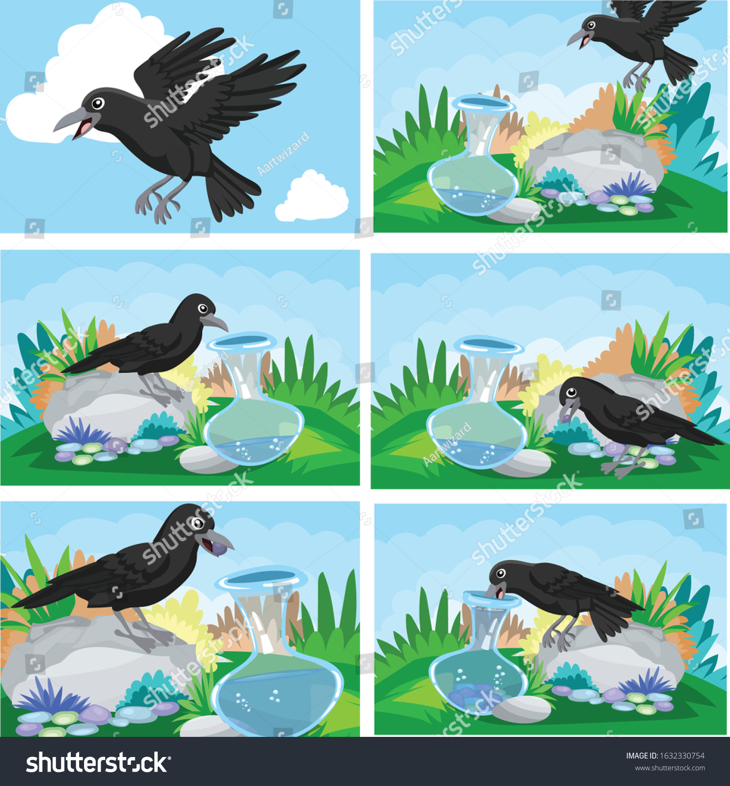

thirsty crowIt was the hot summer days. A crow was suffering from thirst and was wandering here and there in the search of water. But even after wandering in many places, he did not get water. He was flying too late. He was tired due to constant flying. Meanwhile, his thirst was increasing in the scorching heat. Gradually he started losing his patience. He started to feel that his end time was near. Today he will surely be killed. Now he was not being blown away due to fatigue. He sat on the branch of a tree to rest for some time. There he saw that the pitcher was placed under a nearer tree. In the hope that there was water in the pitcher, he flew to the pitcher and looked inside it. The crows saw that there is water in the pitcher, but it is so low that its beak could not reach there. He became depressed. He could not understand how to reach the water kept in the pitcher. But then he thought that being depressed will not work, we have to think of some solution. Sitting on the pitcher, he started thinking of solutions. While thinking, his eyesight fell on a pile of pebbles lying nearby. What was then? The crow's mind rang. He figured out a solution. Without delay, he flew to the pile of pebbles, picked one of them from his beak, brought it to the pitcher, and put it in the pitcher. He started picking each pebble from his beak and putting it in the pitcher. Putting the pebbles will cause the water of the pot to rise. In a short time, the water of the pitcher came up so much that the crow could pour beak into it and drink water. The hard work of the crows had paid off and he was satisfied after drinking wate Moral of The Thirsty Crow StoryNo matter how difficult the time is, one must work patiently and use wisdom to overcome that difficulty. It is possible to solve every problem with patience and intelligence. |
 |